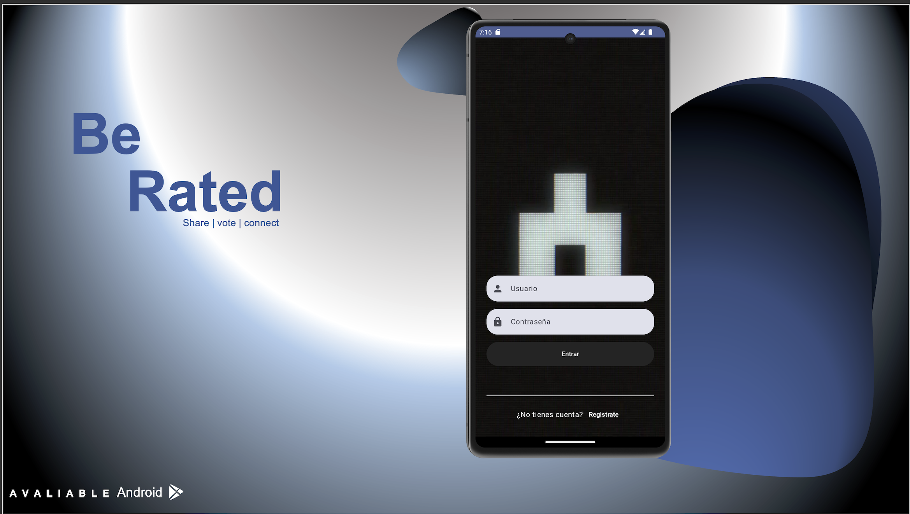

Últimos Proyectos

Proyecto BR
Este fue mi proyecto de fin de ciclo de DAM, consiste en una red social basada en el mundo de Black Mirror en la cual lo usuarios cuentan con puntuaciones, las cuales pueden ser alteradas por el resto de usuarios mediante votaciones en las publicaciones de los usuarios. Es una aplicación Android desarrollada con kotlin y Jetpack Compose, asi como microservicios usando Java Spring entre otras tecnologías. El proyecto se llevó la doble matricula de honor de la promoción tanto para mi compañero Fernando Aguilar Pozo como para mi.

Fuel Master App
El proyecto consistió en el desarrollo de una aplicación para la gestión de un depósito de combustible en el campo de golf de La Finca, desarrollado en Java Swing como parte de la colaboración entre DAM y Gestión Deportiva en la Universidad Europea. Este Proyecto fue premiado como mejor proyecto integrador de la escuela de ciencias STEAM de la promoción 2022-2023